INSTITUTO TECNOLÓGICO DE COSTA RICA.
ESCUELA DE MATEMÁTICA
SOLUCIÓN TERCER EXAMEN PARCIAL
Probabilidades
II SEMESTRE DEL 2000
Tiempo: 2 Horas 15 Minutos Puntaje Máximo 25 Puntos
Probabilidades
II SEMESTRE DEL 2000
Trabaje de forma clara y ordenada. Justifique debidamente cada respuesta. Use bolígrafo, en caso de trabajar con lápiz, no se aceptan apelaciones.
- Sea X el tiempo entre dos llegadas sucesivas en una ventanilla de atención
de un banco. Si X sigue una distribución de tipo exponencial con 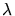 = 2,
calcule lo siguiente: (5 puntos)
- El tiempo esperado entre llegadas sucesivas.
- La desviación estándar del tiempo entre llegadas sucesivas.
- La probabilidad de que el tiempo transcurrido entre una llegada y la llegada sucesiva sea menor que 7 minutos.
-
 = 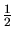 minuto.
= 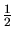 minuto.
-
 = 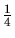 de minuto
= 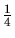 de minuto
-
P[X < 7] = 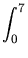2e-2x dx = 1 - e-14
- El tiempo esperado entre llegadas sucesivas.
- Si X es una variable aleatoria con tal que su función generadora de
momentos es
mX(t)=
 ,
Calcule
VAR(X) (4 puntos)
VAR(X) = 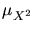 - (
,
Calcule
VAR(X) (4 puntos)
VAR(X) = 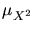 - ( )2 = 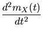(0) - 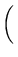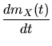(0)
)2 = 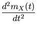(0) - 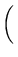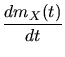(0)
= 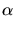( + 1)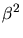 - ( )2 =
)2 =
- Suponga que el tiempo, en horas, que emplea una persona en realizar una tarea
es una variable aleatoria que sigue una distribución gamma con parámetros
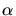 = 2 y
 = ¿Cuál es la probabilidad de que tarde:
= ¿Cuál es la probabilidad de que tarde:
- A lo sumo una hora. (4 puntos)
P[X
 1] = F(1, 2, 1/2) = F(2, 2) = 0.594
1] = F(1, 2, 1/2) = F(2, 2) = 0.594
- Entre .5 y 1.5 horas.
P[0.5 X 1.5] = F(1.5, 2, 1/2) - F(0.5, 2, 1/2)
= F(3, 2) - F(1, 2) = 0.801 - 0.264 = 0.537
si:
f (x) = 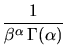 x - 1 e-x/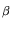 para x positivo. - A lo sumo una hora. (4 puntos)
- El rendimiento de cierto cilindro de gas está normalmente distribuido
con una media de 6 horas y una desviación estándar de 0.5 horas. Este gás se
vende en paquetes de 5 cilindros. Encuentre el tiempo de duración,
que sea excedido solo por el 5% de los los paquetes. (4 puntos)
La distribución del tiempo TP = T1 + ... + T5 de cada paquete es normal con media 6 y desviación y desviación estándar 0.5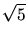 luego lo solicitado es un c tal que.
P[TP < c] = 0.95 = P[Z < ] = 0.95
] = 0.95
de la tabla se obtiene que 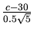 = 1.664 es decir c = 31.8604
- La duración del mezclador de un cierto fabricante es de 5
años, con una desviación estándar de un año. Asumiendo que las
duraciones de estos mezcladores siguen aproximadamente una distribución normal,
encuentre: (4 puntos)
- La probabilidad de que la vida promedio de una muestra aleatoria de 9 e tales mezcladores caiga entre 4.4 y 5.2 años.
La duración de un mezclador es de 5 años con una desviación de 1 año. Ahora la duración promedio tiene una media de 5 años con una desviación de 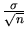 =
 = 0.3333.
= 0.3333.
Se pide P[4.4
 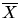 5.2] = P[- 1.8 Z .60] = 0.9918 - 0.0359 = 0.9559
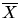 5.2] = P[- 1.8 Z .60] = 0.9918 - 0.0359 = 0.9559
- El valor de
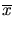 a la derecha del
cual caer1a el 15%
de las medias calculadas de la muestras aleatorias de tamaño 9.
P[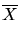 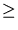 ] = 0, 15P[de la tabla y despejando se obtiene 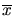 = 5, 35 ] = PZ 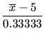 = 0, 85
- La probabilidad de que la vida promedio de una muestra aleatoria de 9 e tales mezcladores caiga entre 4.4 y 5.2 años.
- Un médico atiende un paciente en un tiempo que es una variable
aleatoria con media = 8 minutos y desviación estándar 3 minutos.
Si debe atender un total de 40 pacientes calcule:
- La probabilidad
de que antienda todos los pacientes en menos de 5 horas, asumiendo que
los pacientes
ingresan, en forma continua.
P[T = T1 + ... + T40 300] = P[Z < 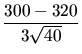] = 0, 1469
- La probabilidad de que el tiempo promedio de atención sea
superior a
P[ > 7.5] = 1 - P[Z 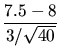] = 0.85311 - P[ 7.5]
- La probabilidad
de que antienda todos los pacientes en menos de 5 horas, asumiendo que
los pacientes
ingresan, en forma continua.